密集行人 002
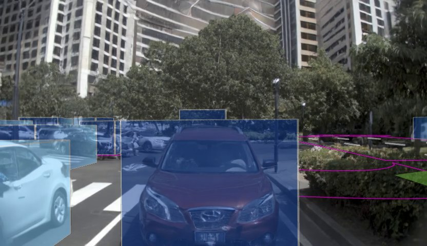
六视角第 29 帧
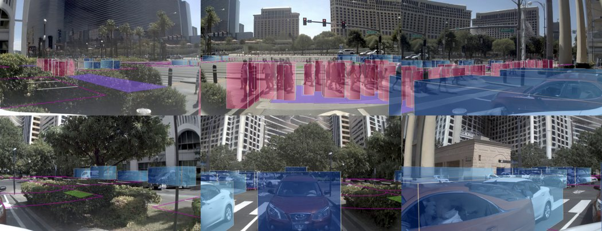
Reference80 · EMA 5,000 步 · 原种子加 10,000 · 10 fps
控制来自原推理读取的六路 HDMap 与目标框栅格，按原像素位置以 50% 不透明度叠加。六视角上排为左前、前、右前，下排为左后、后、右后。
A29 和续段 B1 对应同一时刻。完整视频的第 29 帧是 A29，第 30 帧是 B2。可在接缝处逐帧查看，也可切换视角对照同一时刻。


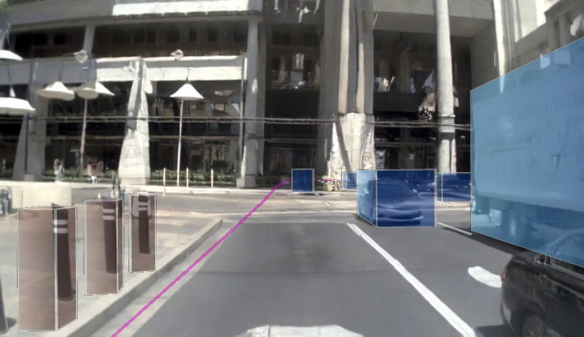
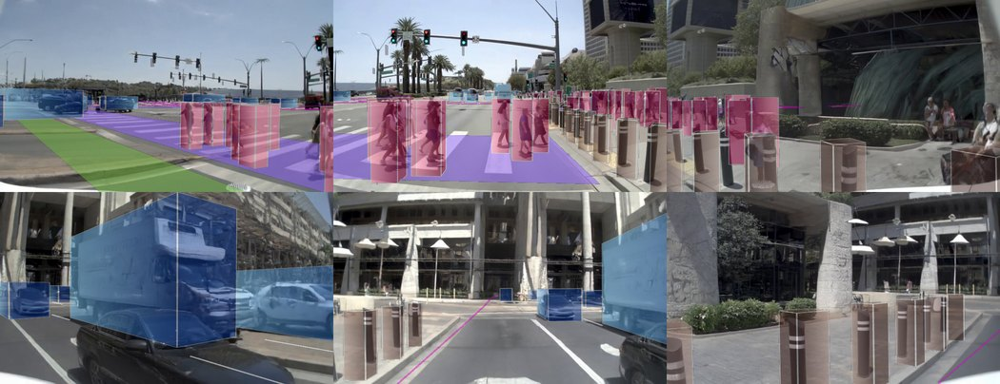
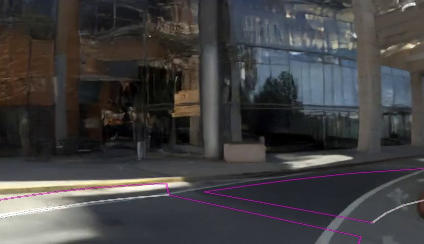
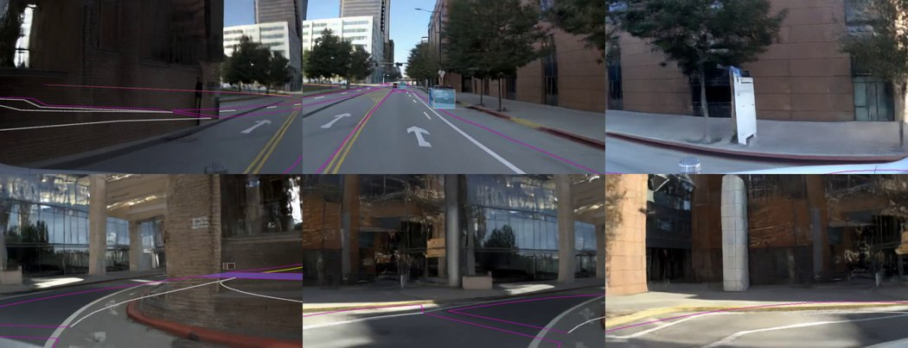
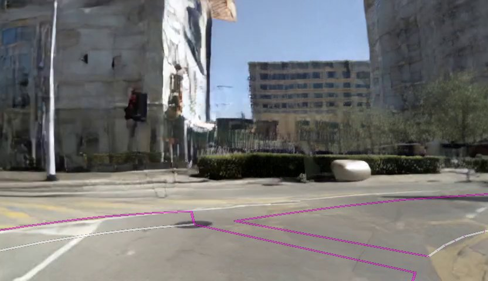
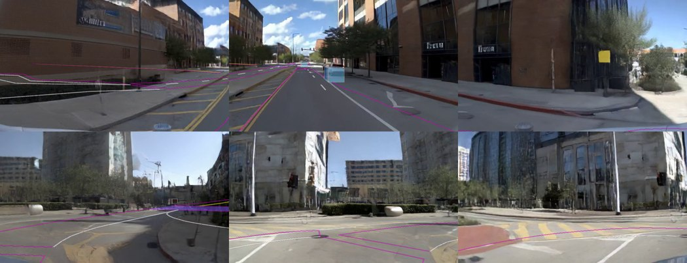
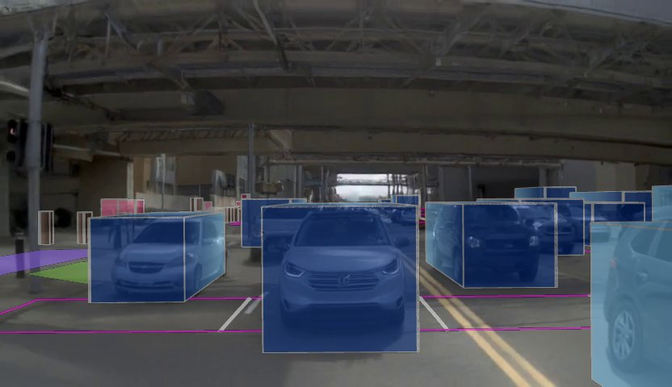
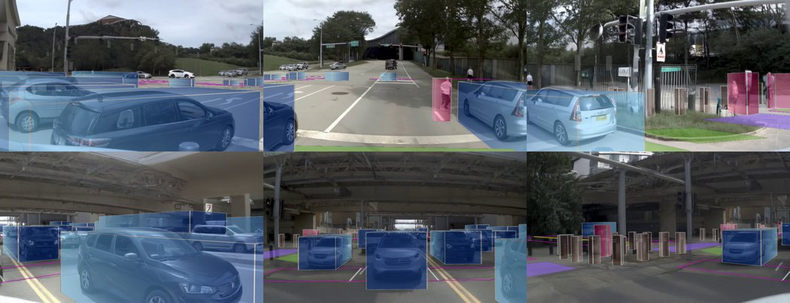
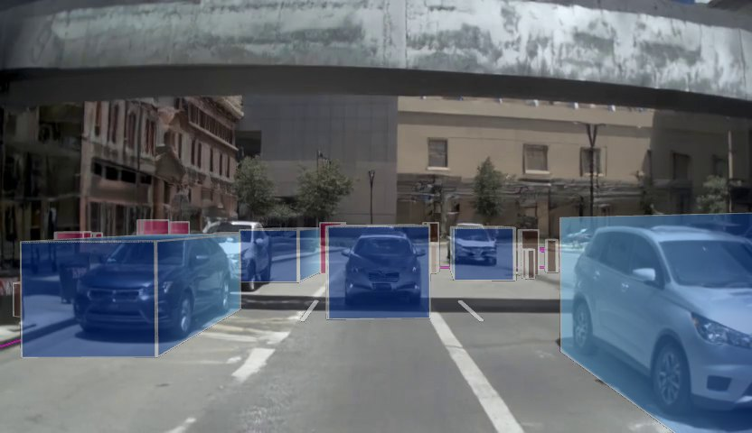
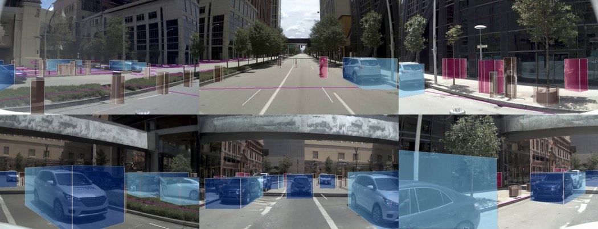
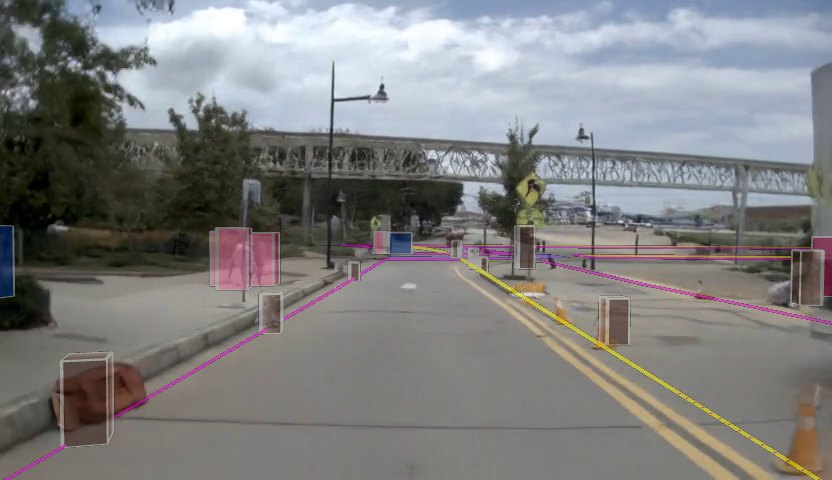
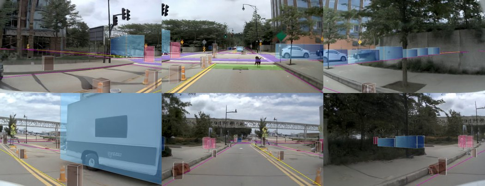
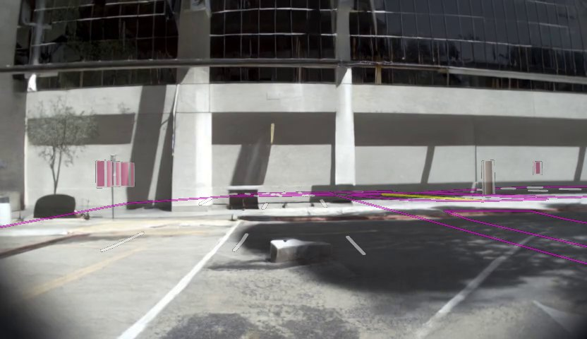
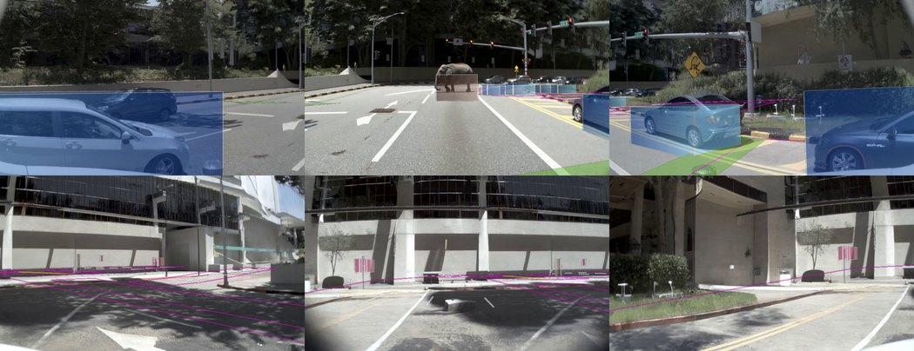
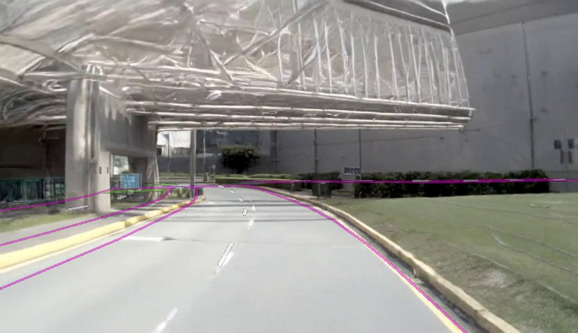
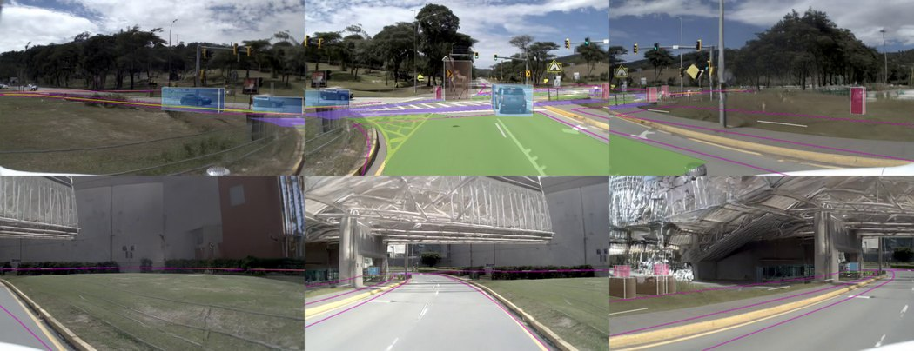
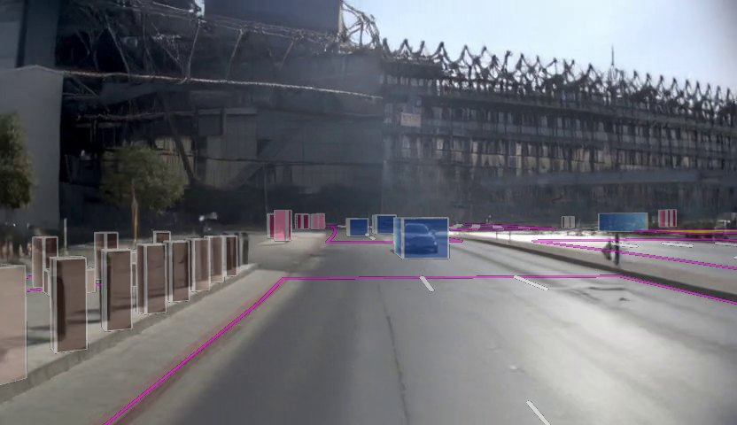
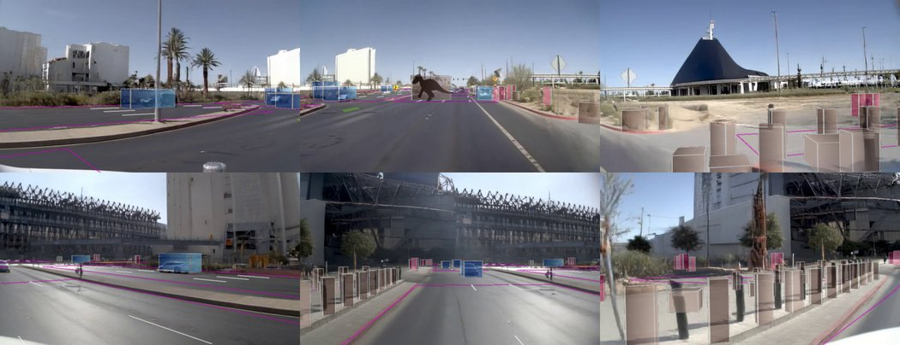